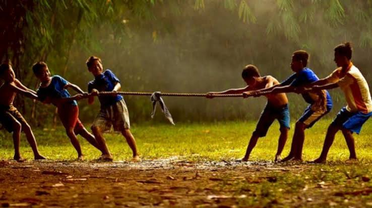

Tarik Tambang: Adu Kekuatan dan Kekompakan

Sekilas Sejarah
Tarik tambang adalah permainan beregu yang populer di seluruh dunia dan sering dilombakan saat perayaan kemerdekaan. Permainan ini menguji kekuatan, daya tahan, dan kekompakan tim untuk menarik tim lawan melewati garis tengah.
Alat & Persiapan
- Tali Tambang: Tali yang kuat dan panjang, biasanya terbuat dari serat.
- Garis Tengah: Garis untuk menandai batas wilayah kedua tim.
- Lokasi: Tanah lapang dan datar.
Cara Bermain
- Pemain dibagi menjadi dua tim dengan jumlah anggota dan kekuatan yang seimbang.
- Kedua tim memegang tali di sisi yang berlawanan, dengan pemain terdepan berada di dekat garis tengah.
- Setelah aba-aba, kedua tim mulai menarik tali sekuat tenaga ke arah wilayah mereka.
- Tim yang berhasil menarik tim lawan melewati garis batas tengah dinyatakan sebagai pemenang.